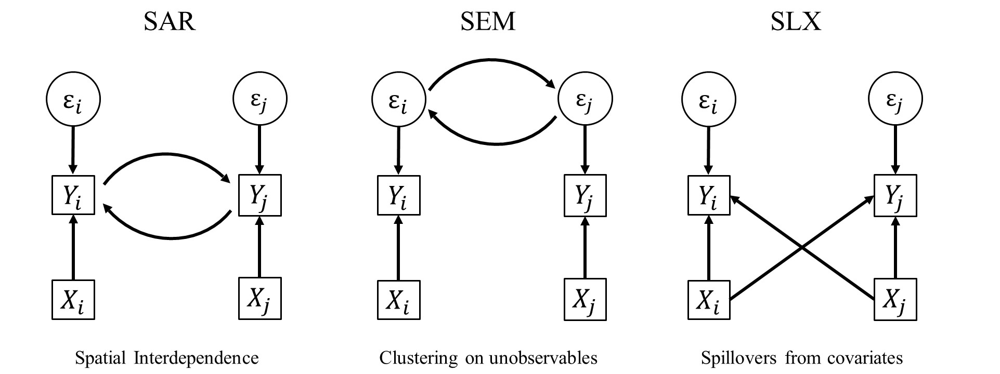

7 Spatial Regression Models
\[ \newcommand{\tr}{\mathrm{tr}} \newcommand{\rank}{\mathrm{rank}} \newcommand{\plim}{\operatornamewithlimits{plim}} \newcommand{\diag}{\mathrm{diag}} \newcommand{\bm}[1]{\boldsymbol{\mathbf{#1}}} \newcommand{\Var}{\mathrm{Var}} \newcommand{\Exp}{\mathrm{E}} \newcommand{\Cov}{\mathrm{Cov}} \newcommand\given[1][]{\:#1\vert\:} \newcommand{\irow}[1]{% \begin{pmatrix}#1\end{pmatrix} } \]
Required packages
Session info
R version 4.6.0 (2026-04-24 ucrt)
Platform: x86_64-w64-mingw32/x64
Running under: Windows 11 x64 (build 26200)
Matrix products: default
LAPACK version 3.12.1
locale:
[1] LC_COLLATE=German_Germany.utf8 LC_CTYPE=German_Germany.utf8
[3] LC_MONETARY=German_Germany.utf8 LC_NUMERIC=C
[5] LC_TIME=German_Germany.utf8
time zone: Europe/Berlin
tzcode source: internal
attached base packages:
[1] stats graphics grDevices utils datasets methods
[7] base
other attached packages:
[1] viridisLite_0.4.3 tmap_4.4 spatialreg_1.4-3
[4] Matrix_1.7-5 spdep_1.4-2 spData_2.3.5
[7] mapview_2.11.4 sf_1.1-1
loaded via a namespace (and not attached):
[1] xfun_0.57 raster_3.6-32
[3] htmlwidgets_1.6.4 lattice_0.22-9
[5] tools_4.6.0 crosstalk_1.2.2
[7] LearnBayes_2.15.2 generics_0.1.4
[9] parallel_4.6.0 stats4_4.6.0
[11] sandwich_3.1-1 proxy_0.4-29
[13] KernSmooth_2.23-26 satellite_1.0.6
[15] data.table_1.18.4 RColorBrewer_1.1-3
[17] leaflet_2.2.3 lifecycle_1.0.5
[19] compiler_4.6.0 farver_2.1.2
[21] deldir_2.0-4 microbenchmark_1.5.0
[23] terra_1.9-27 leafsync_0.1.0
[25] codetools_0.2-20 leaflegend_1.2.8
[27] stars_0.7-2 htmltools_0.5.9
[29] marginaleffects_0.32.0 class_7.3-23
[31] MASS_7.3-65 classInt_0.4-11
[33] lwgeom_0.2-16 wk_0.9.5
[35] abind_1.4-8 boot_1.3-32
[37] multcomp_1.4-30 nlme_3.1-169
[39] digest_0.6.39 mvtnorm_1.3-7
[41] splines_4.6.0 fastmap_1.2.0
[43] grid_4.6.0 colorspace_2.1-2
[45] cli_3.6.6 logger_0.4.2
[47] magrittr_2.0.5 maptiles_0.11.0
[49] base64enc_0.1-6 XML_3.99-0.23
[51] cols4all_0.10 survival_3.8-6
[53] leafem_0.2.5 TH.data_1.1-5
[55] e1071_1.7-17 scales_1.4.0
[57] backports_1.5.1 sp_2.2-1
[59] rmarkdown_2.31 otel_0.2.0
[61] zoo_1.8-15 png_0.1-9
[63] coda_0.19-4.1 evaluate_1.0.5
[65] knitr_1.51 tmaptools_3.3
[67] s2_1.1.11 rlang_1.2.0
[69] Rcpp_1.1.1-1.1 glue_1.8.1
[71] DBI_1.3.0 rstudioapi_0.18.0
[73] jsonlite_2.0.0 spacesXYZ_1.6-0
[75] R6_2.6.1 units_1.0-1 Reload data from pervious session
load("_data/msoa2_spatial.RData")There are various techniques to model spatial dependence and spatial processes (LeSage and Pace 2009). Here, we will just cover a few of the most common techniques / econometric models. One advantage of the most basic spatial model (SLX) is that this method can easily be incorporated in a variety of other methodologies, such as machine learning approaches.
For more in-depth materials see LeSage and Pace (2009) and Kelejian and Piras (2017). Franzese and Hays (2007), Halleck Vega and Elhorst (2015), LeSage (2014), Rüttenauer (2022), and Wimpy et al. (2021) provide article-length introductions. Rüttenauer (2024) is a handbook chapter based on the materials of this workshop.
7.1 Spatial Regression Models
Broadly, spatial dependence or clustering in some characteristic can be the result of three different processes:

Strictly speaking, there are some other possibilities too, such as measurement error or the wrong choice on the spatial level. For instance, imagine we have a city-specific characteristic (e.g. public spending) allocated to neighbourhood units. Obviously, this will introduce heavy autocorrelation on the neighbourhood level by construction.
There are three basic ways of incorporating spatial dependence, which then can be further combined. As before, the \(N \times N\) spatial weights matrix \(\bm W\) defines the spatial relationship between units.
7.1.1 Spatial Error Model (SEM)
- Clustering on Unobservables
\[ \begin{split} {\bm y}&=\alpha{\bm \iota}+{\bm X}{\bm \beta}+{\bm u},\\ {\bm u}&=\lambda{\bm W}{\bm u}+{\bm \varepsilon} \end{split} \]
\(\lambda\) denotes the strength of the spatial correlation in the errors of the model: your errors influence my errors.
- \(> 0\): positive error dependence,
- \(< 0\): negative error dependence,
- \(= 0\): traditional OLS model.
\(\lambda\) is defined in the range \([-1, +1]\).
7.1.2 Spatial Autoregressive Model (SAR)
- Interdependence
\[ {\bm y}=\alpha{\bm \iota}+\rho{\bm W}{\bm y}+{\bm X}{\bm \beta}+ {\bm \varepsilon} \]
\(\rho\) denotes the strength of the spatial correlation in the dependent variable (spatial autocorrelation): your outcome influences my outcome.
- \(> 0\): positive spatial dependence,
- \(< 0\): negative spatial dependence,
- \(= 0\): traditional OLS model.
\(\rho\) is defined in the range \([-1, +1]\).
7.1.3 Spatially lagged X Model (SLX)
- Spillovers in Covariates
\[ {\bm y}=\alpha{\bm \iota}+{\bm X}{\bm \beta}+{\bm W}{\bm X}{\bm \theta}+ {\bm \varepsilon} \]
\(\theta\) denotes the strength of the spatial spillover effects from covariate(s) on the dependent variable: your covariates influence my outcome.
\(\theta\) is basically like any other coefficient from a covariate. It is thus not bound to any range.
Moreover, there are models combining two sets of the above specifications.
7.1.4 Spatial Durbin Model (SDM)
- Interdependence
- Spillovers in Covariates
\[ {\bm y}=\alpha{\bm \iota}+\rho{\bm W}{\bm y}+{\bm X}{\bm \beta}+{\bm W}{\bm X}{\bm \theta}+ {\bm \varepsilon} \]
7.1.5 Spatial Durbin Error Model (SDEM)
- Clustering on Unobservables
- Spillovers in Covariates
\[ \begin{split} {\bm y}&=\alpha{\bm \iota}+{\bm X}{\bm \beta}+{\bm W}{\bm X}{\bm \theta}+ {\bm u},\\ {\bm u}&=\lambda{\bm W}{\bm u}+{\bm \varepsilon} \end{split} \]
7.1.6 Combined Spatial Autocorrelation Model (SAC)
- Clustering on Unobservables
- Interdependence
\[ \begin{split} {\bm y}&=\alpha{\bm \iota}+\rho{\bm W}{\bm y}+{\bm X}{\bm \beta}+ {\bm u},\\ {\bm u}&=\lambda{\bm W}{\bm u}+{\bm \varepsilon} \end{split} \]
7.1.7 General Nesting Spatial Model (GNS)
- Clustering on Unobservables
- Interdependence
- Spillovers in Covariates
\[ \begin{split} {\bm y}&=\alpha{\bm \iota}+\rho{\bm W}{\bm y}+{\bm X}{\bm \beta}+{\bm W}{\bm X}{\bm \theta}+ {\bm u},\\ {\bm u}&=\lambda{\bm W}{\bm u}+{\bm \varepsilon} \end{split} \]
The General Nesting Spatial Model (GNS) is only weakly (or not?) identifiable (Gibbons and Overman 2012).
It’s analogous to Manski’s reflection problem on neighbourhood effects Manski (1993): If people in the same group behave similar, this can be because a) imitating behaviour of the group, b) exogenous characteristics of the group influence the behaviour, and c) members of the same group are exposed to the same external circumstances. We just cannot separate those in observational data.
Note that all of these models assume different data generating processes (DGP) leading to the spatial pattern. Although there are specifications tests, it is generally not possible to let the data decide which one is the true underlying DGP (Cook et al. 2020; Rüttenauer 2022). However, there might be theoretical reasons to guide the model specification (Cook et al. 2020).
Just because SAR is probably the most commonly used model does not make it the best choice. In contrast, various studies (Halleck Vega and Elhorst 2015; Rüttenauer 2022; Wimpy et al. 2021) highlight the advantages of the relative simple SLX model. Moreover, this specification can basically be incorporated in any other statistical method.
7.1.8 A note on missings
Missing values create a problem in spatial data analysis. For instance, in a local spillover model with an average of 10 neighbours, two initial missing values will lead to 20 missing values in the spatially lagged variable. For global spillover models, one initial missing will ‘flow’ through the neighbourhood system until the cutoff point (and create an excess amount of missings).
Depending on the data, units with missings can either be dropped and omitted from the initial weights creation, or we need to impute the data first, e.g. using interpolation or Kriging.
7.2 Mini Example
Let’s try to make sense of this. We rely on a mini example using a few units in Camden
sub.spdf <- msoa.spdf[c(172, 175, 178, 179, 181, 182), ]
mapview(sub.spdf)We then construct queens neighbours, and have a look at the resulting non-normalized matrix \(\bm W\).
queens.nb <- poly2nb(sub.spdf, queen = TRUE, snap = 1)
W <- nb2mat(queens.nb, style = "B")
W 172 175 178 179 181 182
172 0 0 1 0 0 0
175 0 0 0 1 0 1
178 1 0 0 1 1 0
179 0 1 1 0 1 1
181 0 0 1 1 0 1
182 0 1 0 1 1 0
attr(,"call")
nb2mat(neighbours = queens.nb, style = "B")We have selected 6 units. So, \(\bm W\) is a \(6 \times 6\) matrix. we see that observation 1 has one neighbour: observation 3. Observation 2 has two nieghbours: observation 4 and observation 6. The diagonal is zero: no unit is a neighbour of themselves.
No we row-normalize this matrix.
queens.lw <- nb2listw(queens.nb,
style = "W")
W_rn <- listw2mat(queens.lw)
W_rn 172 175 178 179 181 182
172 0.0000000 0.0000000 1.0000000 0.0000000 0.0000000 0.0000000
175 0.0000000 0.0000000 0.0000000 0.5000000 0.0000000 0.5000000
178 0.3333333 0.0000000 0.0000000 0.3333333 0.3333333 0.0000000
179 0.0000000 0.2500000 0.2500000 0.0000000 0.2500000 0.2500000
181 0.0000000 0.0000000 0.3333333 0.3333333 0.0000000 0.3333333
182 0.0000000 0.3333333 0.0000000 0.3333333 0.3333333 0.0000000No every single weight \(w_{ij}\) is divided by the total number of neighbours \(n_i\) of the focal unit. For observation 1, observation 3 is the only neighbour, thus a weight = 1. FOr observation two, both neighbours have a weight of 1/2. For obervation 3 (with three neighbours) each neighbour got a weight of 1/3.
What happens if we multiply this matrix \(\bm W\) with a \(N \times 1\) vector \(\bm y\) or \(\bm x\)?
A short reminder on matrix multiplication.
\[ \bm W * \bm y = \begin{bmatrix} w_{11} & w_{12} & w_{13}\\ w_{21} & w_{22} & w_{23}\\ w_{31} & w_{32} & w_{33} \end{bmatrix} * \begin{bmatrix} y_{11} \\ y_{21} \\ y_{31} \end{bmatrix}\\ = \begin{bmatrix} w_{11}y_{11} + w_{12}y_{21} + w_{13}y_{31}\\ w_{21}y_{11} + w_{22}y_{21} + w_{23}y_{31}\\ w_{31}y_{11} + w_{32}y_{21} + w_{33}y_{31} \end{bmatrix} \]
Each line of \(\bm W * \bm y\) just gives a weighted average of the other \(y\)-values \(y_j\) in the sample. In case of the row-normalization, each neighbour gets the same weight \(\frac{1}{n_i}\). This is simply the mean of \(y_j\) of the neighbours in case of a row-normalized contiguity weights matrix.
Note that the mean interpretation is only valid with row-normalization. What would we get with inverse-distance based weights?
Let’s look at this in our example
y <- sub.spdf$med_house_price
x <- sub.spdf$pubs_count
W_rn 172 175 178 179 181 182
172 0.0000000 0.0000000 1.0000000 0.0000000 0.0000000 0.0000000
175 0.0000000 0.0000000 0.0000000 0.5000000 0.0000000 0.5000000
178 0.3333333 0.0000000 0.0000000 0.3333333 0.3333333 0.0000000
179 0.0000000 0.2500000 0.2500000 0.0000000 0.2500000 0.2500000
181 0.0000000 0.0000000 0.3333333 0.3333333 0.0000000 0.3333333
182 0.0000000 0.3333333 0.0000000 0.3333333 0.3333333 0.0000000y[1] 376812.5 414625.0 713125.0 322750.0 495000.0 364000.0x[1] 1 3 3 1 9 7 [,1]
172 713125.0
175 343375.0
178 398187.5
179 496687.5
181 466625.0
182 410791.7W_rn_x [,1]
172 3.000000
175 4.000000
178 3.666667
179 5.500000
181 3.666667
182 4.333333Let’s check if our interpretation is true
7.3 Real Example
First, we need the a spatial weights matrix.
# Contiguity (Queens) neighbours weights
queens.nb <- poly2nb(msoa.spdf,
queen = TRUE,
snap = 1) # we consider points in 1m distance as 'touching'
queens.lw <- nb2listw(queens.nb,
style = "W")We can estimate spatial models using spatialreg.
7.3.1 SAR
Let’s estimate a spatial SAR model using the lagsarlm() with contiguity weights. We use median house value as depended variable, and include population density (POPDEN), the air pollution (no2), and the share of ethnic minorities (per_mixed, per_asian, per_black, per_other).
Call:
lagsarlm(formula = log(med_house_price) ~ log(no2) + log(POPDEN) +
per_mixed + per_asian + per_black + per_other, data = msoa.spdf,
listw = queens.lw, Durbin = FALSE)
Residuals:
Min 1Q Median 3Q Max
-0.5281789 -0.1220524 -0.0099245 0.0992203 1.0936745
Type: lag
Coefficients: (asymptotic standard errors)
Estimate Std. Error z value Pr(>|z|)
(Intercept) 3.17383180 0.29041604 10.9286 < 2.2e-16
log(no2) 0.39705423 0.04452880 8.9168 < 2.2e-16
log(POPDEN) -0.05583014 0.01242876 -4.4920 7.055e-06
per_mixed 0.01851577 0.00579832 3.1933 0.001407
per_asian -0.00228346 0.00045876 -4.9775 6.442e-07
per_black -0.01263650 0.00100282 -12.6009 < 2.2e-16
per_other -0.00161419 0.00289082 -0.5584 0.576582
Rho: 0.66976, LR test value: 473.23, p-value: < 2.22e-16
Asymptotic standard error: 0.025311
z-value: 26.461, p-value: < 2.22e-16
Wald statistic: 700.19, p-value: < 2.22e-16
Log likelihood: 196.7203 for lag model
ML residual variance (sigma squared): 0.035402, (sigma: 0.18815)
Number of observations: 983
Number of parameters estimated: 9
AIC: -375.44, (AIC for lm: 95.786)
LM test for residual autocorrelation
test value: 8.609, p-value: 0.0033451This looks pretty much like a conventional model output, with some additional information: a highly significant mod_1.sar$rho of 0.67 indicates strong positive spatial autocorrelation.
Remember that is the coefficient for the term \(\bm y = \rho \bm W \bm y \ldots\). It is bound to be below 1 for positive autocorrelation.
In substantive terms, house prices in the focal unit positively influence house prices in neighbouring units, which again influences house prices among the neighbours of these neighbours, and so on (we’ll get back to this).
The coefficients of covariates in a SAR model are not marginal or partical effects, because of the spillovers and feedback loops in \(\bm y\) (see below)!
From the coefficient, we can only interpret the direction: there’s a positive effect of air pollution and a negative effect of population sensity, and so on…
7.3.2 SEM
SEM models can be estimated using errorsarlm().
Call:
errorsarlm(formula = log(med_house_price) ~ log(no2) + log(POPDEN) +
per_mixed + per_asian + per_black + per_other, data = msoa.spdf,
listw = queens.lw, Durbin = FALSE)
Residuals:
Min 1Q Median 3Q Max
-0.581784 -0.105218 -0.012758 0.094430 0.913426
Type: error
Coefficients: (asymptotic standard errors)
Estimate Std. Error z value Pr(>|z|)
(Intercept) 12.92800660 0.35239118 36.6865 < 2.2e-16
log(no2) 0.15735425 0.10880721 1.4462 0.1481282
log(POPDEN) -0.08316270 0.01254315 -6.6301 3.354e-11
per_mixed -0.03377960 0.00811054 -4.1649 3.115e-05
per_asian -0.00413116 0.00096849 -4.2656 1.994e-05
per_black -0.01653816 0.00126741 -13.0488 < 2.2e-16
per_other -0.01693010 0.00462999 -3.6566 0.0002556
Lambda: 0.88605, LR test value: 623.55, p-value: < 2.22e-16
Asymptotic standard error: 0.015803
z-value: 56.068, p-value: < 2.22e-16
Wald statistic: 3143.6, p-value: < 2.22e-16
Log likelihood: 271.8839 for error model
ML residual variance (sigma squared): 0.026911, (sigma: 0.16405)
Number of observations: 983
Number of parameters estimated: 9
AIC: -525.77, (AIC for lm: 95.786)In this case mod_1.sem$lambda gives us the spatial parameter. A highly significant lambda of 0.89 indicates that the errors are highly spatially correlated (e.g. due to correlated unobservables). Again, $= 1 $ would be the maximum.
In spatial error models, we can interpret the coefficients directly, as in a conventional linear model.
7.3.3 SLX
SLX models can either be estimated with lmSLX() directly, or by creating \(\bm W \bm X\) manually and plugging it into any available model-fitting function.
Call:
lm(formula = formula(paste("y ~ ", paste(colnames(x)[-1], collapse = "+"))),
data = as.data.frame(x), weights = weights)
Coefficients:
Estimate Std. Error t value Pr(>|t|)
(Intercept) 1.058e+01 1.539e-01 6.878e+01 0.000e+00
log.no2. -4.407e-01 1.811e-01 -2.434e+00 1.511e-02
log.POPDEN. -7.684e-02 1.734e-02 -4.430e+00 1.049e-05
per_mixed -3.304e-02 1.130e-02 -2.925e+00 3.530e-03
per_asian -2.381e-03 1.474e-03 -1.615e+00 1.065e-01
per_black -1.623e-02 1.801e-03 -9.009e+00 1.080e-18
per_other -2.039e-02 6.564e-03 -3.107e+00 1.947e-03
lag.log.no2. 9.936e-01 1.994e-01 4.984e+00 7.384e-07
lag.log.POPDEN. 1.133e-01 2.875e-02 3.939e+00 8.759e-05
lag.per_mixed 1.261e-01 1.429e-02 8.820e+00 5.249e-18
lag.per_asian -3.828e-03 1.661e-03 -2.305e+00 2.140e-02
lag.per_black -1.805e-02 2.241e-03 -8.056e+00 2.296e-15
lag.per_other 4.814e-02 7.971e-03 6.039e+00 2.204e-09In SLX models, we can simply interpret the coefficients of direct and indirect (spatially lagged) covariates.
For instance, lets look at population density:
A high population density in the focal unit is related to lower house prices (a 1% increase in population density decreses house prices by -0.08%), but
A high population density in the neighbouring areas is related to higher house prices (while keeping population density in the focal unit constant). A 1% increase in the average population density across the adjacent neighbourhoods increases house prices in the focal unit by 0.11%)
Potential interpretation: areas with a low population density in central regions of the city (high pop density in surrounding neighbourhoods) have higher house prices. We could try testing this interpretation by including the distance to the city centre as a control.
Also note how the air pollution coefficient has changed here, with a negative effect in the focal unit and positive one among the neighbouring units.
An alternative way of estimating the same model is lagging the covariates first.
# Loop through vars and create lagged variables
msoa.spdf$log_POPDEN <- log(msoa.spdf$POPDEN)
msoa.spdf$log_no2 <- log(msoa.spdf$no2)
msoa.spdf$log_med_house_price <- log(msoa.spdf$med_house_price)
vars <- c("log_med_house_price", "log_no2", "log_POPDEN",
"per_mixed", "per_asian", "per_black", "per_other",
"per_owner", "per_social", "pubs_count")
for(v in vars){
msoa.spdf[, paste0("w.", v)] <- lag.listw(queens.lw,
var = st_drop_geometry(msoa.spdf)[, v])
}
# Alternatively:
w_vars <- create_WX(st_drop_geometry(msoa.spdf[, vars]),
listw = queens.lw,
prefix = "w")
head(w_vars) w.log_med_house_price w.log_no2 w.log_POPDEN w.per_mixed
1 12.98382 3.843750 4.662014 4.748368
2 12.28730 3.098960 3.300901 3.978275
3 12.21207 3.206338 4.009795 3.997487
4 12.18176 3.169934 3.630360 2.759082
5 12.11159 3.221203 3.993660 3.930061
6 12.08393 3.217865 3.876070 3.419488
w.per_asian w.per_black w.per_other w.per_owner w.per_social
1 23.899916 7.879758 3.2080074 25.75738 33.85580
2 19.951593 10.451828 1.6368986 66.42278 15.75042
3 20.793559 12.965863 1.7526693 58.72637 21.38169
4 7.633439 12.135478 0.6992118 66.52519 19.70500
5 12.791140 16.108948 1.3817357 53.05539 29.44022
6 8.997514 15.312652 0.9611710 59.49460 23.81126
w.pubs_count
1 8.5454545
2 0.6666667
3 0.2857143
4 0.2000000
5 0.4000000
6 0.1666667And subsequently we use those new variables in a linear model.
Call:
lm(formula = log(med_house_price) ~ log(no2) + log(POPDEN) +
per_mixed + per_asian + per_black + per_other + w.log_no2 +
w.log_POPDEN + w.per_mixed + w.per_asian + w.per_black +
w.per_other, data = msoa.spdf)
Residuals:
Min 1Q Median 3Q Max
-0.50809 -0.16605 -0.01817 0.13055 1.09039
Coefficients:
Estimate Std. Error t value Pr(>|t|)
(Intercept) 10.582440 0.153862 68.779 < 2e-16 ***
log(no2) -0.440727 0.181063 -2.434 0.01511 *
log(POPDEN) -0.076840 0.017345 -4.430 1.05e-05 ***
per_mixed -0.033042 0.011298 -2.925 0.00353 **
per_asian -0.002381 0.001474 -1.615 0.10655
per_black -0.016229 0.001801 -9.009 < 2e-16 ***
per_other -0.020391 0.006564 -3.107 0.00195 **
w.log_no2 0.993602 0.199370 4.984 7.38e-07 ***
w.log_POPDEN 0.113262 0.028752 3.939 8.76e-05 ***
w.per_mixed 0.126069 0.014294 8.820 < 2e-16 ***
w.per_asian -0.003828 0.001661 -2.305 0.02140 *
w.per_black -0.018054 0.002241 -8.056 2.30e-15 ***
w.per_other 0.048139 0.007971 6.039 2.20e-09 ***
---
Signif. codes: 0 '***' 0.001 '**' 0.01 '*' 0.05 '.' 0.1 ' ' 1
Residual standard error: 0.2262 on 970 degrees of freedom
Multiple R-squared: 0.653, Adjusted R-squared: 0.6487
F-statistic: 152.1 on 12 and 970 DF, p-value: < 2.2e-16Looks pretty similar to lmSLX() results, and it should! A big advantage of the SLX specification is that we can use the lagged variables in basically all methods which take variables as inputs, such as non-linear models, matching algorithms, and machine learning tools.
Moreover, using the lagged variables gives a high degree of freedom. For instance, we could (not saying that it necessarily makes sense):
Use different weights matrices for different variables
Include higher order neighbours using
nblag()(with an increasing number of orders we go towards a more global model, but we estimate a coefficient for each spillover, instead of estimating just one)Use machine learning techniques to determine the best fitting weights specification.
7.3.4 SDEM
SDEM models can be estimated using errorsarlm() with the additional option Durbin = TRUE.
Call:
errorsarlm(formula = log(med_house_price) ~ log(no2) + log(POPDEN) +
per_mixed + per_asian + per_black + per_other, data = msoa.spdf,
listw = queens.lw, Durbin = TRUE)
Residuals:
Min 1Q Median 3Q Max
-0.617795 -0.106380 -0.014832 0.095826 0.927445
Type: error
Coefficients: (asymptotic standard errors)
Estimate Std. Error z value Pr(>|z|)
(Intercept) 10.4422711 0.3652160 28.5920 < 2.2e-16
log(no2) -0.2057489 0.1264913 -1.6266 0.1038253
log(POPDEN) -0.0769744 0.0132094 -5.8272 5.635e-09
per_mixed -0.0222407 0.0079705 -2.7904 0.0052648
per_asian -0.0037484 0.0010054 -3.7284 0.0001927
per_black -0.0179751 0.0012383 -14.5160 < 2.2e-16
per_other -0.0150218 0.0044895 -3.3460 0.0008199
lag.log(no2) 1.0004493 0.1739835 5.7503 8.911e-09
lag.log(POPDEN) -0.0054244 0.0327803 -0.1655 0.8685689
lag.per_mixed 0.0669697 0.0169350 3.9545 7.669e-05
lag.per_asian -0.0018566 0.0015957 -1.1635 0.2446385
lag.per_black -0.0079949 0.0024833 -3.2195 0.0012843
lag.per_other 0.0273377 0.0087430 3.1268 0.0017672
Lambda: 0.76173, LR test value: 455.7, p-value: < 2.22e-16
Asymptotic standard error: 0.024949
z-value: 30.531, p-value: < 2.22e-16
Wald statistic: 932.16, p-value: < 2.22e-16
Log likelihood: 300.847 for error model
ML residual variance (sigma squared): 0.027504, (sigma: 0.16584)
Number of observations: 983
Number of parameters estimated: 15
AIC: -571.69, (AIC for lm: -117.99)And this SDEM can be interpreted like a combination of SEM and SLX.
First, we still see highly significant auto-correlation in the error term. However, it’s lower in magnitude now that we also include the \(\bm W X\) terms.
Second, the coefficients tell a similar story as in the SLX (use the same interpretation), but some coefficient magnitudes have become smaller.
7.3.5 SDM
SDM models can be estimated using lagsarlm() with the additional option Durbin = TRUE.
Call:
lagsarlm(formula = log(med_house_price) ~ log(no2) + log(POPDEN) +
per_mixed + per_asian + per_black + per_other, data = msoa.spdf,
listw = queens.lw, Durbin = TRUE)
Residuals:
Min 1Q Median 3Q Max
-0.614314 -0.107947 -0.013509 0.092234 0.917398
Type: mixed
Coefficients: (asymptotic standard errors)
Estimate Std. Error z value Pr(>|z|)
(Intercept) 2.7843426 0.2944721 9.4554 < 2.2e-16
log(no2) -0.3112762 0.1308101 -2.3796 0.0173312
log(POPDEN) -0.0802866 0.0125213 -6.4120 1.436e-10
per_mixed -0.0368998 0.0081596 -4.5223 6.118e-06
per_asian -0.0033726 0.0010636 -3.1711 0.0015189
per_black -0.0159770 0.0013006 -12.2848 < 2.2e-16
per_other -0.0209743 0.0047369 -4.4279 9.516e-06
lag.log(no2) 0.4880923 0.1456778 3.3505 0.0008067
lag.log(POPDEN) 0.0781188 0.0207600 3.7629 0.0001679
lag.per_mixed 0.0640880 0.0104646 6.1243 9.110e-10
lag.per_asian 0.0017665 0.0012101 1.4598 0.1443498
lag.per_black 0.0070487 0.0017938 3.9295 8.511e-05
lag.per_other 0.0284822 0.0057774 4.9299 8.226e-07
Rho: 0.73126, LR test value: 501.83, p-value: < 2.22e-16
Asymptotic standard error: 0.025889
z-value: 28.246, p-value: < 2.22e-16
Wald statistic: 797.86, p-value: < 2.22e-16
Log likelihood: 323.9111 for mixed model
ML residual variance (sigma squared): 0.026633, (sigma: 0.1632)
Number of observations: 983
Number of parameters estimated: 15
AIC: -617.82, (AIC for lm: -117.99)
LM test for residual autocorrelation
test value: 36.704, p-value: 1.3747e-09And this SDM can be interpreted like a combination of SAR and SLX.
First, there’s still substantial auto-correlation in \(\bm y\), and this has become even stronger as compared to SAR.
Second, we can interpret the direction of the effect, but we cannot interpret the coefficient as marginal effects.
7.4 Appendix: Why spatial regression may be necessary
7.4.1 Non-spatial OLS
Let us start with a linear model, where \(\bm y\) is the outcome or dependent variable (\(N \times 1\)), \(\bm X\) are various exogenous covariates (\(N \times k\)), and \(\bm \varepsilon\) (\(N \times 1\)) is the error term. We are usually interested in the coefficient vector \(\bm \beta\) (\(k \times 1\)) and its insecurity estimates.
\[ {\bm y}={\bm X}{\bm \beta}+ {\bm \varepsilon} \] The work-horse for estimating \(\bm \beta\) in the social science is the OLS estimator (Wooldridge 2010).
\[ \hat{\beta}=({\bm X}^\intercal{\bm X})^{-1}{\bm X}^\intercal{\bm y}. \]
\(\Exp(\epsilon_i|\bm X_i) = 0\): for every value of \(X\), the average / expectation of the error term \(\bm \varepsilon\) equals zero – put differently: the error term is independent of \(X\),
the observations of the sample are independent and identically distributed (i.i.d),
the fourth moments of the variables \(\bm X_i\) and \(Y_i\) are positive and definite – put differently: extreme values / outliers are very very rare,
\(\text{rank}(\bm X) = K\): the matrix \(\bm X\) has full rank – put differently: no perfect multicollinearity between the covariates,
\(\Var(\varepsilon|x) = \sigma^2\): the error terms \(\varepsilon\) are homoskedastic / have the same variance given any value of the explanatory variable,
\(\varepsilon \sim \mathcal{N}(0, \sigma^2)\): the error terms \(\varepsilon\) are normally distributed (conditional on the explanatory variables \(X_i\)).
Which of the six assumptions above may be violated by spatial dependence?
7.4.2 Problem of ignoring spatial dependence
Does spatial dependence influence the results / coefficient estimates of non-spatial regression models, or in other words: is ignoring spatial dependence harmful?
I’ve heard different answers, ranging from “It only affects the standard errors” to “it always introduces bias”. As so often, the true (or best?) answer is somewhere in the middle: it depends (Betz et al. 2020; Cook et al. 2020; Pace and LeSage 2010; Rüttenauer 2022).
The easiest way to think of it is analogous to the omit variable bias (Betz et al. 2020; Cook et al. 2020):
\[ plim~\hat{\beta}_{OLS}= \beta + \gamma \frac{\Cov(\bm x, \bm z)}{\Var(\bm x)}, \]
where \(z\) is some omit variable, and \(\gamma\) is the conditional effect of \(\bm z\) on \(\bm y\). Now imagine that the neighbouring values of the dependent variable \(\bm W \bm y\) are autocorrelated to focal unit which we denote with \(\rho > 0\), and that the covariance between the focal unit’s exogenous covariates and \(\bm W \bm y\) is not zero. Then we will have an omitted variable bias due to spatial dependence:
\[ plim~\hat{\beta}_{OLS}= \beta + \rho \frac{\Cov(\bm x, \bm W \bm y)}{\Var(\bm x)} \neq \beta, \]
For completeness, the entire bias is a bit more complicated (Pace and LeSage 2010; Rüttenauer 2022) and looks like:
\[ plim~\hat{\beta}=\frac{\sum_{ij}({\bm M}(\delta){\bm M}(\delta)^\intercal\circ{\bm M}(\rho))_{ij}} {\tr({\bm M}(\delta){\bm M}(\delta)^\intercal)}\beta \\ +\frac{\sum_{ij}({\bm M}(\delta){\bm M}(\delta)^\intercal\circ{\bm M}(\rho){\bm W})_{ij}} {\tr({\bm M}(\delta){\bm M}(\delta)^\intercal)}\theta, \] where \(\circ\) denotes the Hadamard product, \({\bm M}(\delta)=({\bm I}_N-\delta{\bm W})^{-1}\), and \({\bm M}(\rho)=({\bm I}_N-\rho{\bm W})^{-1}\).
Essentially, the non-spatial OLS estimator \(\beta_{OLS}\) is biased in the presence of either (Pace and LeSage 2010; Rüttenauer 2022):
Spatial autocorrelation in the dependent variable (\(\rho\neq0\)) and spatial autocorrelation in the covariate (\(\delta\neq0\)). This bias increases with \(\rho\), \(\delta\), and \(\beta\).
Local spatial spillover effects (\(\theta\neq0\)) and spatial autocorrelation in the covariate (\(\delta\neq0\)). This is analogous to the omitted variable bias resulting from the omission of \({\bm W} {\bm x}\). It increases with \(\theta\) and \(\delta\), but additionally with \(\rho\) if \(\theta\neq0\) and \(\delta\neq0\).
An omitted variable and \(\mathrm{E}({\bm \varepsilon}|{\bm x})\neq0\). This non-spatial omitted variable bias \(\gamma\) is amplified by spatial dependence in the disturbances (\(\lambda\)) and spatial autocorrelation in the dependent variable (\(\rho\)), but also increases with positive values of \(\delta\) if either \(\rho\neq 0\) or \(\lambda\neq 0\). Obviously, it also increases with \(\gamma\).